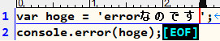
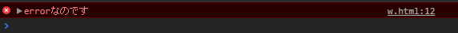
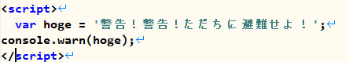
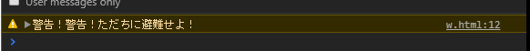
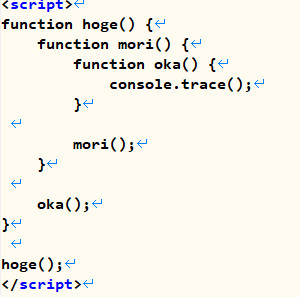
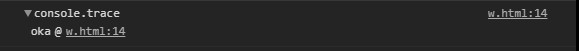
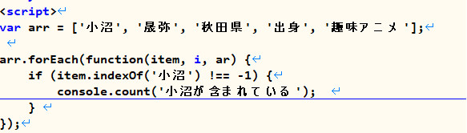
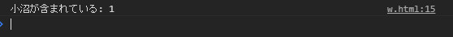
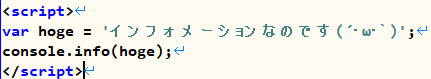
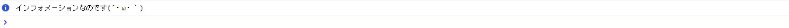

突然ですが、consoleオブジェクトと聞いて何を思い浮かべますか?
consoleログ？正直自分もそのぐらいしか思い浮かびませんでした（笑） 今日は意外と知られていないconsoleログの便利な使い方を伝授していきたいと思います。
| assert | count |
| debug | dir |
| dirxml | error |
| group | groupCollapsed |
| groupEnd | info |
| log | markTimeline |
| profile | profileEnd |
| time | timeEnd |
| timeStamp | trace |
| warn |
console１つにしてもこんなにも沢山のメソッドがあるんです！
今回はこの中から確実に使える5つを紹介していきたいと思います。最初は、errorメソッドから見ていきましょう！
console.error(message-object)
エラーアイコン付きで表示してくれるメソッドです。
 ♪エラーを瞬時に発見し易いので便利ですね♪
メッセージを警告アイコン付で表示させる事が出来るメソッドです。
 ♪メッセージの意味付けと言う意味で活用すると非常に便利ですね♪
console.trace();
実行時のスタックトレースを表示するメソッドです。
 ♪経由して来たメソッドを確認する場合には便利ですね♪
console.count([title])
何回通ったのかを出力するメソッドです。
 ♪指定した文字が何回通ったのか分かるのでラベル付けとして活用すると便利ですね♪
console.info(message-object)
このメソッドは名前の通りインフォメーションをお知らせするメソッドです。もちろんアイコン付!!
 ♪こちらもerrorメッセージ同様意味付け・タグ付けとして活用すると便利ですね♪
※何故かChromeのコンソール画面だとインフォメーションアイコンがでなくて画像はEdgeを使用しました。Edgeコンソール最強説・・・??